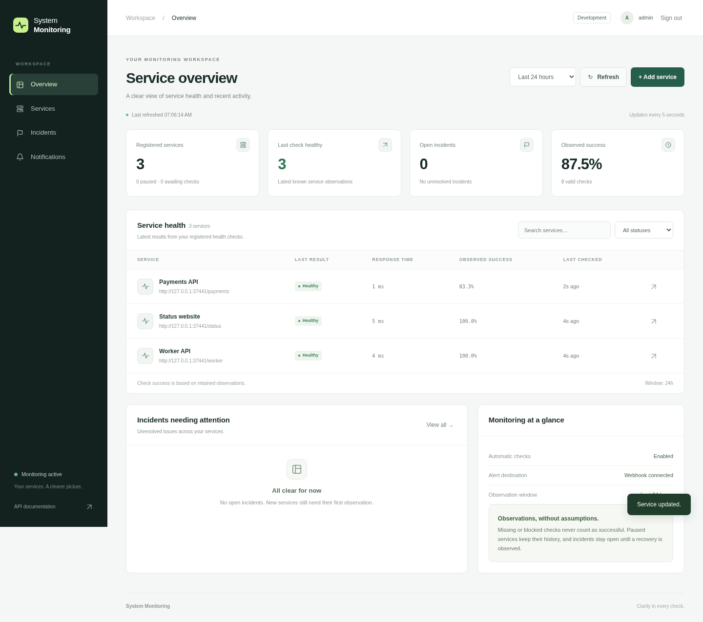
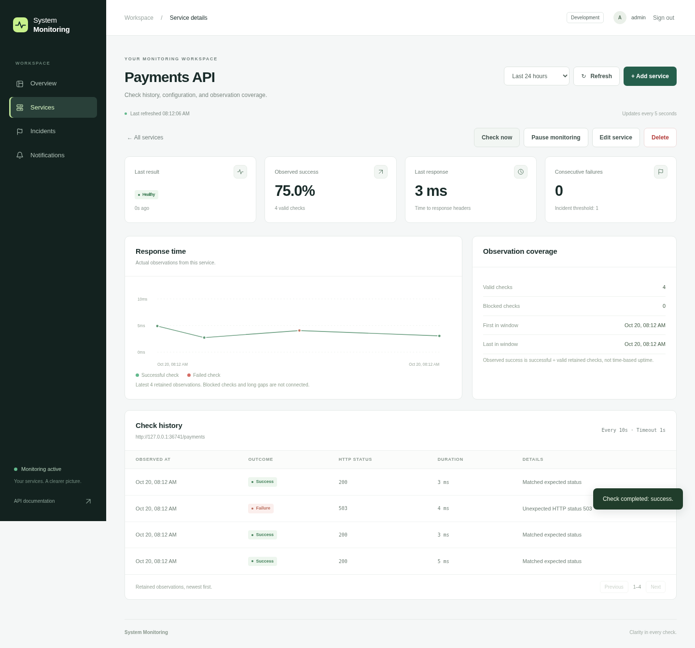

Checks with context
Schedule bounded HTTP checks against approved targets. Track response times and observed success, with sample counts and retention limits.
Understand the checks ↗Know which service needs attention, see what happened, and follow the recovery. A focused monitoring workspace that runs on your infrastructure.

A clear path from signal to action
For teams that need a practical view of their HTTP services without operating a distributed monitoring platform.
Schedule bounded HTTP checks against approved targets. Track response times and observed success, with sample counts and retention limits.
Understand the checks ↗Consecutive failures open an incident. Follow its timeline and see recovery recorded when the service responds successfully again.
Walk through an outage ↗Durable webhook events survive restarts. See attempts, retries and recovery notifications in the same administrator workspace.
Read the webhook contract ↗The detail behind the status
Open a service to inspect response times, retained observations and incident history. Edit its check settings or pause monitoring from one place.

A repeatable demonstration
Start the isolated sample service and add its approved health URL.
Return HTTP 503. Scheduled checks cross the failure threshold and open one incident.
Return HTTP 200 and see that same incident resolve. Inspect webhook delivery when configured.
The walkthrough uses a local sample service. No shared credentials or public control endpoint.
Recorded against local sample targets: sign-in, service creation, outage, recovery and delivery retries. Mobile layout is verified separately in the browser check. Read the text walkthrough.
From repository to workspace
Bring Docker Engine and Compose v2. Choose your own passwords, approve the origins you want to monitor, and create your administrator account.
Local installation first. Use the HTTPS deployment guide before exposing the workspace.
Full installation guide ↗git clone https://github.com/AryanSharma9917/SystemMonitoring.git
cd SystemMonitoring
cp .env.example .env
# Edit .env: set GRAFANA_ADMIN_PASSWORD
# and MONITOR_APPROVED_ORIGINS before starting.
docker compose up --build -d
docker compose exec fastapi python -m system_monitoring.adminThen open http://localhost:8000 and sign in.
A practical starting point
Use an isolated installation for your own services or a customer pilot. Setup, dashboard configuration, alert tuning and maintenance are a practical initial service offering.
One administrator and one application process per installation. Observed success is based on retained checks, not a contractual uptime SLA. Multi-tenant accounts, billing and distributed collectors are outside the current scope.
Describe the services you need to monitor and how you want to receive incident events.
Discuss a pilot ↗Or open a project issue ↗Use project issues if Discussions is unavailable. Keep credentials and private infrastructure details out of public posts.